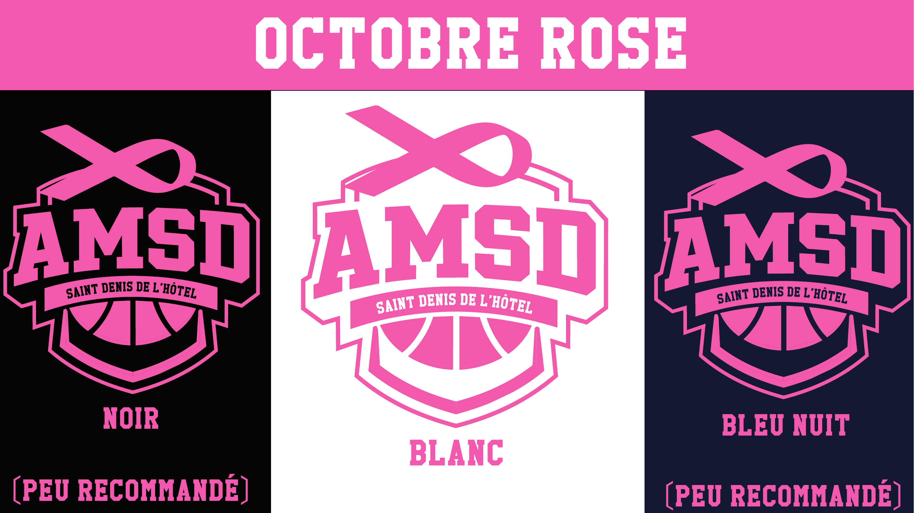
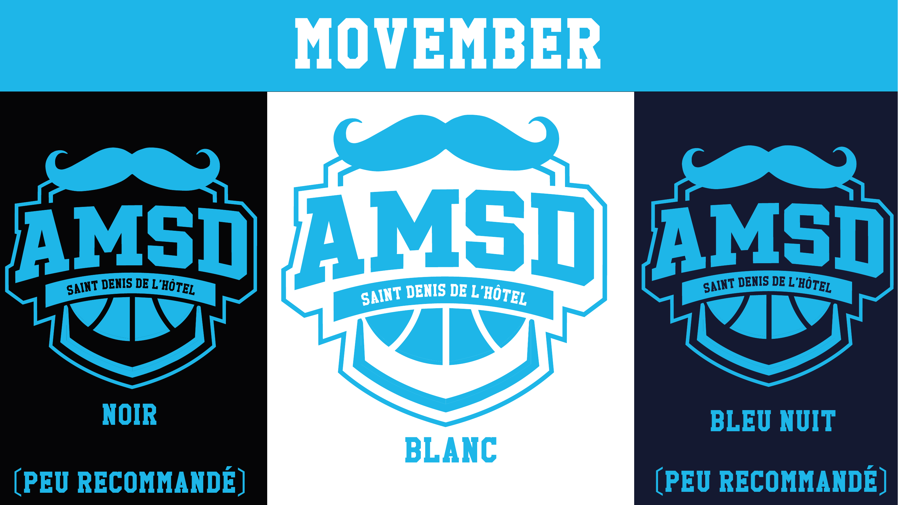
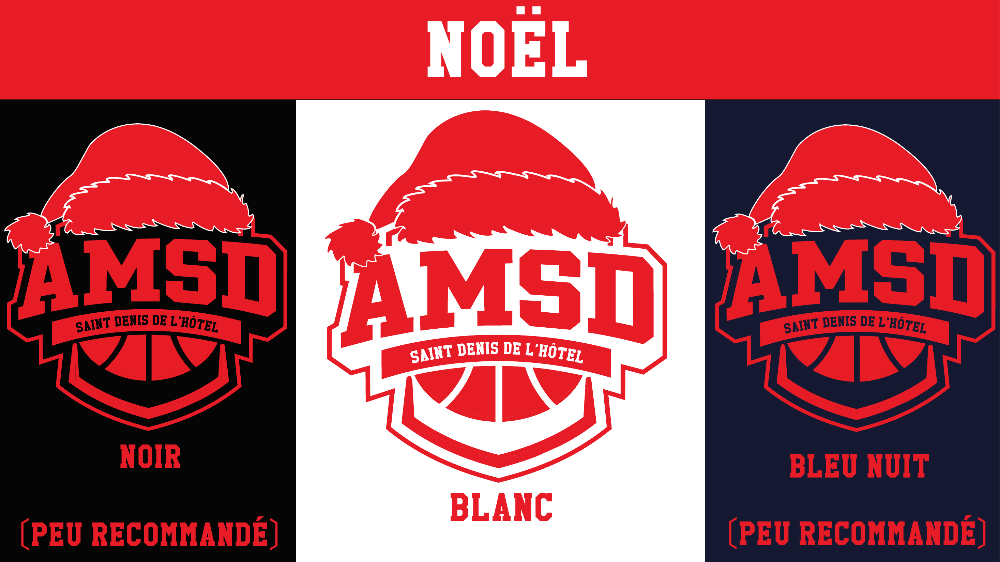
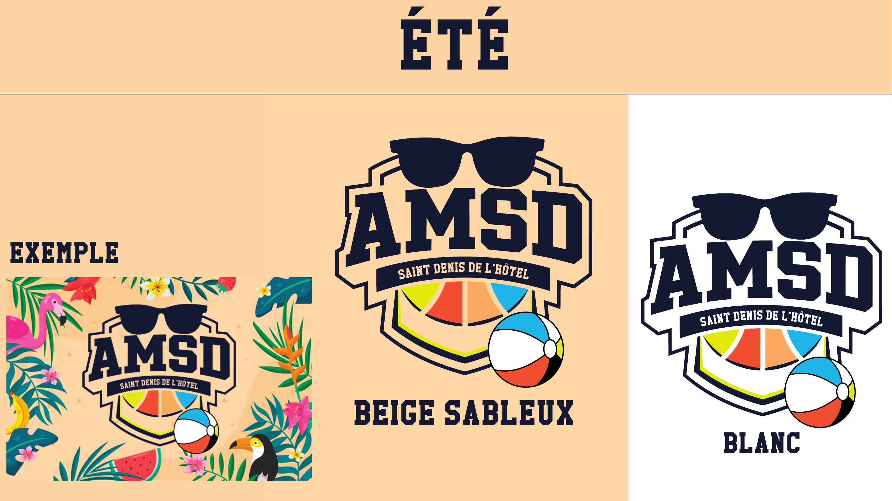
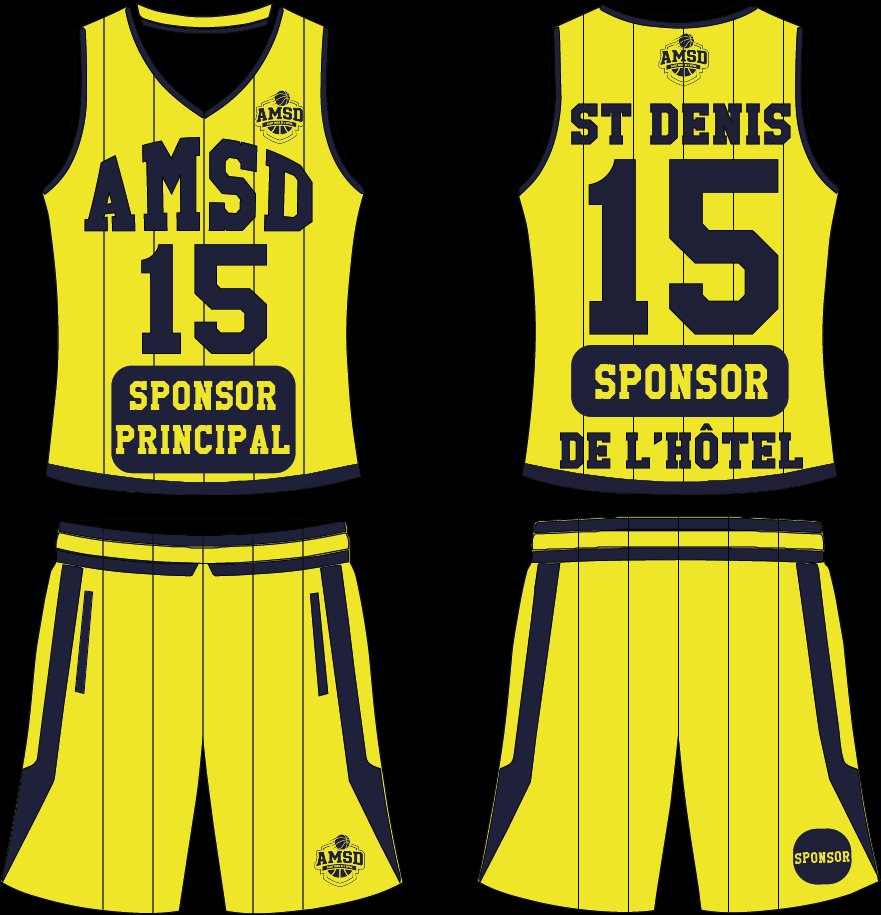
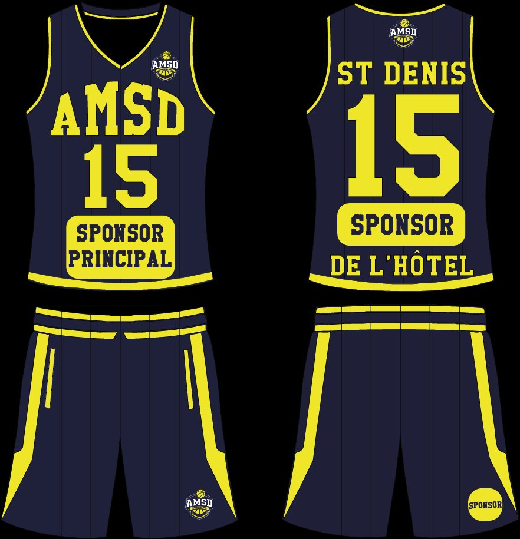
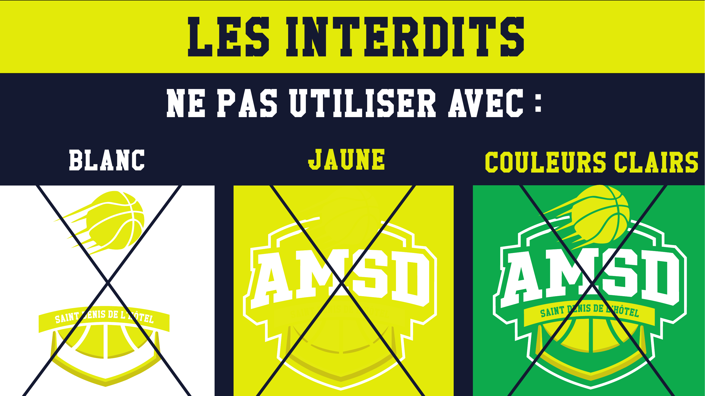

Projet 06 — Stage · Identité visuelle
Identité AMSD
C'est mon projet de stage, et donc mon premier vrai projet client : l'AMSD (Saint Denis de l'Hôtel), un club de basket, pour qui j'ai travaillé sur l'identité visuelle de la saison à venir. Sortir du cadre scolaire change tout : il y a un commanditaire, des contraintes de marque réelles, et des supports qui vont vraiment être imprimés et portés sur le terrain.
Construire une identité cohérente et déclinable, capable de vivre toute l'année :
- un système de logo avec ses versions de couleur (bleu nuit, noir, blanc, jaune) ;
- des déclinaisons événementielles : Octobre Rose, Movember, Noël, Été ;
- les maillots de la saison prochaine (domicile et extérieur) ;
- une charte d'utilisation pour encadrer tous ces usages.
Je suis parti de l'ADN du club — le blason, le ballon, le bloc-lettres « AMSD » — pour le décliner proprement sur chaque fond. La règle que je me suis fixée : l'identité doit rester reconnaissable quelle que soit la couleur, sans jamais sacrifier la lisibilité.

J'ai ensuite imaginé des déclinaisons événementielles, qui reprennent le blason mais l'habillent selon l'opération : le ruban d'Octobre Rose, la moustache de Movember, le bonnet de Noël, les lunettes et le ballon de plage pour l'Été. À chaque fois, je définis quels fonds fonctionnent et lesquels cassent l'identité.




En parallèle, j'ai dessiné les maillots de la saison prochaine : un jeu domicile et un jeu extérieur, avec les emplacements sponsors, le numéro, le nom et le flocage « ST DENIS ».


Enfin, pour que tout ce travail ne parte pas dans tous les sens une fois entre les mains du club, j'ai produit une charte d'utilisation. Pour chaque version, elle précise noir sur blanc les fonds autorisés et « les interdits » — un garde-fou simple pour protéger la lisibilité et l'identité.

Le club repart avec une identité complète, déclinable et documentée : un système de logo, quatre opérations événementielles, deux jeux de maillots et une charte qui cadre le tout. C'est le projet où j'ai le plus progressé, parce qu'il fallait penser « système » et pas « image isolée ».
Je considère maîtriser la déclinaison d'une identité visuelle et la production d'une charte, ainsi que le travail en contexte professionnel avec un commanditaire. Mes pistes : pousser l'identité vers le digital (gabarits réseaux sociaux, versions animées) et formaliser un vrai design system complet pour aller encore plus loin que la charte d'usage.